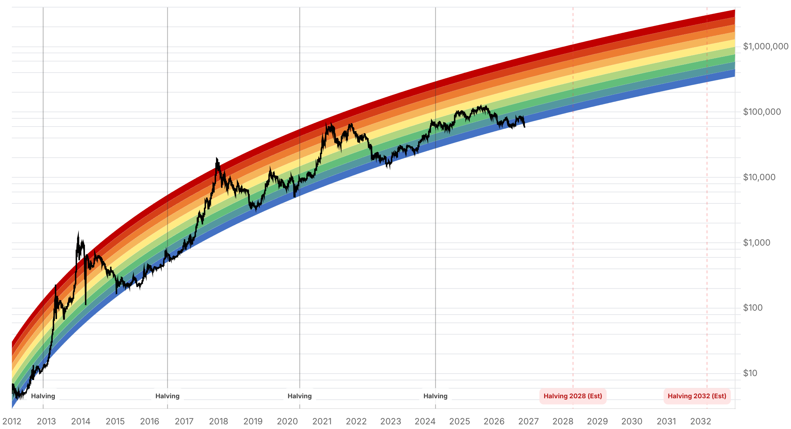

Reporte financiero
BTC cotiza en vivo a USD 58.033,99 (07:16 UTC), -1,31% frente al cierre previo de USD 58.802,60 (rango del día: USD 55.631,57 a USD 59.081,54) -y -6,20% frente al precio en vivo de ayer (USD 61.882,94)-. La novedad dominante del día es que el precio rompió decisivamente el objetivo técnico de USD 58.500 señalado ayer por OKX Orbit tras perder el soporte de USD 62.000: el viernes 20 de noviembre BTC llegó a tocar USD 57.778,35 en Binance (por debajo del mínimo del 1 de julio de USD 57.800,19, el nivel más bajo en meses) antes de rebotar a cerca de USD 59.237,50, cerrando el día aun así -4,37%. El detonante no fue específico de cripto: una liquidación de posiciones apalancadas en acciones de IA hundió al Nasdaq Composite -5,3% (borrando sus ganancias del año) y al S&P 500 -3,7% (más de 10% bajo su récord de octubre), arrastrando a bitcoin como activo de riesgo de alto beta -no como cobertura-. CoinGlass reportó USD 1.900 millones en liquidaciones en 24 horas (~USD 1.730 millones en largos, ~USD 169,7 millones en cortos; USD 735,75 millones solo en bitcoin), y la capitalización total del mercado cripto cayó 4,9% a ~USD 2,02 billones, con ETH -7,30%, BNB -6,73% y XRP/SOL cerca de -5,5% cada uno -una caída más amplia que la de BTC-. Sobre el trasfondo macro: el IPC de octubre confirmó inflación núcleo de +0,3% por tercer mes consecutivo, llevando la probabilidad implícita en CME de un alza de 25pb el 9 de diciembre a 89,6% -el gobernador Waller matizó el 18-nov que si la Fed opta por 25pb en vez de 50pb, quiere que se señale explícitamente otra alza en enero-. El inversor Mark Yusko (Morgan Creek Capital) describió la situación como 'un mal ciclo de liquidación' en el que la venta forzada de posiciones apalancadas en acciones arrastra a otros activos como bitcoin, pero ubica a USD 58.000 como el nivel clave a vigilar y sostiene que el ciclo sigue en su 'primavera' (visión constructiva de más largo plazo pese al dolor de corto plazo). El Fear & Greed Index se mantiene sin cambios en 12 ('Extreme Fear', igual que ayer), consolidando ya varias semanas en miedo extremo. BTC acumula una séptima caída semanal consecutiva, la racha más larga desde 2022 (nueve semanas). Los flujos de ETFs de bitcoin del 19 de noviembre, pendientes de confirmar en ediciones anteriores, se verificaron hoy con Farside/tftc.io: salida neta de USD 582,2M (liderada por IBIT con -USD 541,1M), parcialmente compensada por MSBT (+USD 49,6M) -no hay dato fiable aún para el 20 de noviembre-. No hay novedades verificables desde ayer sobre la exclusión de Strategy (MSTR) de los índices MSCI (sigue efectiva al cierre del 30 de noviembre), la gobernanza de Nvidia, la Clarity Act, BTCPay Server, la apelación del Reino Unido sobre los 61.000 BTC, Cantor Fitzgerald, ni el reclamo no verificado sobre Irán.
El viernes 20 de noviembre, una venta masiva de acciones ligadas a IA hundió al Nasdaq Composite -5,3% (borrando sus ganancias acumuladas en el año) y al S&P 500 -3,7% (más de 10% bajo su récord de octubre). Bitcoin, actuando como 'activo de riesgo de alto beta, no como cobertura' (en palabras usadas por cobertura de mercado del día anterior), siguió de cerca a las acciones tecnológicas: llegó a tocar USD 57.778,35 en Binance -por debajo del mínimo del 1 de julio de USD 57.800,19, el nivel más bajo en meses- antes de recuperarse a cerca de USD 59.237,50, cerrando el día -4,37%. Esto confirma y supera el objetivo técnico de USD 58.500 que OKX Orbit había señalado ayer como el siguiente nivel si se perdía el soporte de USD 62.000 -la ruptura fue más profunda de lo anticipado-. CoinGlass reportó USD 1.900 millones en liquidaciones en 24 horas (~USD 1.730M en posiciones largas, ~USD 169,7M en cortas; USD 735,75M solo en bitcoin). La caída se sintió en todo el mercado cripto, no solo en BTC: la capitalización total cayó 4,9% a ~USD 2,02 billones, con Ethereum (-7,30%), BNB (-6,73%) y XRP/Solana (~-5,5% cada uno) cayendo proporcionalmente más que bitcoin.
El dato de IPC de octubre, conocido esta semana, mostró que la inflación general subió 0,4% mensual y la inflación núcleo 0,3% por tercer mes consecutivo -confirmando la persistencia inflacionaria que ya venía señalándose-. Los futuros de CME ahora implican una probabilidad de 89,6% de un alza de 25 puntos básicos en la reunión del 9 de diciembre. El gobernador de la Fed Christopher Waller, que el 18 de noviembre ya había respaldado públicamente la opción de un alza de 50pb, matizó esa misma fecha que si la Fed finalmente opta por 25pb en vez de 50pb, quiere que el comité señale explícitamente una alza adicional para la reunión de enero -es decir, su condición no es solo el tamaño del movimiento de diciembre, sino asegurar que el ciclo de alzas continúe-. Una fuente (Investing.com/InvestingLive) añade que JPMorgan ahora proyecta tres alzas consecutivas de la Fed -este dato tiene una sola fuente confirmada y se reporta con esa salvedad-.
El reporte de ayer no tenía dato para el 19 de noviembre. Hoy se confirma con Farside/tftc.io: salida neta total de USD 582,2 millones el 19 de noviembre, liderada por IBIT (-USD 541,1M), seguida de FBTC (-USD 45,9M) y ARKB (-USD 31,3M), con GBTC en -USD 13,9M -parcialmente compensada por MSBT (+USD 49,6M) y BTCW (+USD 0,3M)-. Esto profundiza la racha de salidas netas de los días 17 y 18 ya reportada ayer (-USD 239,9M y -USD 306,4M respectivamente). No se encontró una fuente confiable y fechada correctamente para el flujo del 20 de noviembre al momento de esta consulta -una cifra de USD 903M que circula en búsquedas resultó pertenecer al 20 de noviembre de 2025, no de 2026, y se descartó explícitamente para evitar reportar un dato equivocado de año-.
El inversor Mark Yusko, fundador de Morgan Creek Capital, comentó en una entrevista publicada esta semana que el mercado está en 'un mal ciclo de liquidación' (bad liquidation cycle): cuando una posición apalancada en acciones (en este caso, ligada a IA) cae, los inversores venden otros activos -bonos, oro, bitcoin- para cubrir márgenes, lo que explica por qué BTC cae junto a las acciones tecnológicas sin un catalizador cripto propio. Yusko ubica el rango de USD 58.000 como el nivel de precio clave a vigilar en este momento, pero mantiene una lectura constructiva de más largo plazo: considera que el ciclo de bitcoin sigue en su 'primavera', no en una fase terminal.
La exclusión confirmada de Strategy (MSTR) de los índices MSCI sigue efectiva al cierre del 30 de noviembre, sin novedades adicionales desde ayer. No hay desarrollos nuevos sobre la gobernanza de Nvidia, la Clarity Act (sigue estancada en el Senado), BTCPay Server, la apelación del Reino Unido sobre los 61.000 BTC, Cantor Fitzgerald, ni el reclamo no verificado sobre un ataque a un radar en Baréin mencionado en ediciones anteriores -se repite brevemente para que quede constancia de que se revisó, no porque haya cambiado.
| Periodo | Valor |
|---|---|
| 15 nov | 65305.06 |
| 16 nov | 64855.84 |
| 17 nov | 64893.95 |
| 18 nov | 62987.27 |
| 19 nov | 61901.82 |
| 20 nov | 58798.98 |
| 21 nov (en vivo) | 58033.99 |
| Periodo | Valor |
|---|---|
| Hoy | 12 |

“We are in a bad liquidation cycle right now.”
“If the Fed moves by a quarter point in December, officials should signal another hike is likely in January.”
El precio rompió decisivamente el objetivo técnico de USD 58.500 señalado ayer, tocando un mínimo de varios meses (USD 57.778,35, bajo el mínimo del 1 de julio) antes de rebotar levemente. El detonante no fue cripto-específico: una liquidación de acciones de IA que golpeó duramente al Nasdaq (-5,3%) y el S&P 500 (-3,7%), con bitcoin actuando como activo de riesgo de alto beta. Con el Fear & Greed Index estancado en 12 y sin señales de capitulación total en los flujos de ETFs, el nivel de USD 58.000 (señalado hoy por Mark Yusko como clave) y el mínimo intradía de ~USD 55.631 son las referencias técnicas inmediatas a vigilar.
La inflación núcleo de octubre (+0,3% por tercer mes) eleva a 89,6% la probabilidad de un alza de 25pb el 9 de diciembre, con Waller condicionando su apoyo a 25pb a que se señale explícitamente una alza adicional en enero -el ciclo de endurecimiento de la Fed sigue siendo el catalizador macro dominante-. Los flujos de ETFs, confirmados hoy para el 19 de noviembre (-USD 582,2M, liderados por IBIT), refuerzan la narrativa de salida institucional de las últimas semanas, aunque sin dato aún para el 20 de noviembre que permita evaluar si la liquidación de acciones de IA se trasladó también a salidas de ETFs ese día.
Sin cambios en los objetivos de precio de largo plazo ya reportados en ediciones anteriores (Citigroup, Bernstein, Standard Chartered, Tom Lee, NYDIG, Armstrong, piso de costo de producción de JPMorgan en USD 94.000). Con el precio spot actual en USD 58.033,99, la brecha frente a ese piso de costo de producción se amplía significativamente respecto a ayer. La lectura de Mark Yusko -que ubica el ciclo actual en su 'primavera' pese al dolor de corto plazo- es la visión constructiva más reciente que contrasta con la fragilidad técnica señalada arriba.
Los flujos confirmados hoy solo cubren hasta el 19 de noviembre (-USD 582,2M). La venta masiva de acciones de IA del 20 de noviembre, que arrastró a bitcoin junto con el resto de activos de riesgo, todavía no tiene flujo de ETF confirmado -si se confirma una salida grande ese día, reforzaría la tesis de Yusko de un 'ciclo de liquidación' cruzado entre acciones y cripto, no un problema cripto-específico.
BTC tocó un mínimo de varios meses (bajo el mínimo del 1 de julio) y rebotó parcialmente, pero el detonante -una liquidación forzada en acciones de IA- puede repetirse si continúa la inestabilidad en ese sector. Mark Yusko señala USD 58.000 como nivel clave a vigilar; un cierre sostenido por debajo de ese nivel, o un nuevo mínimo bajo USD 55.631 (mínimo intradía de hoy), debilitaría la lectura de rebote técnico.
Waller ya no solo discute 25pb vs. 50pb para el 9 de diciembre: condicionó su apoyo a un movimiento de 25pb a que se señale explícitamente otra alza en enero. Esto implica que incluso un resultado de diciembre que el mercado interprete como 'menos agresivo' (25pb) podría venir acompañado de guidance hawkish para el primer trimestre de 2027, con impacto negativo similar al de un alza de 50pb en el sentimiento de activos de riesgo.